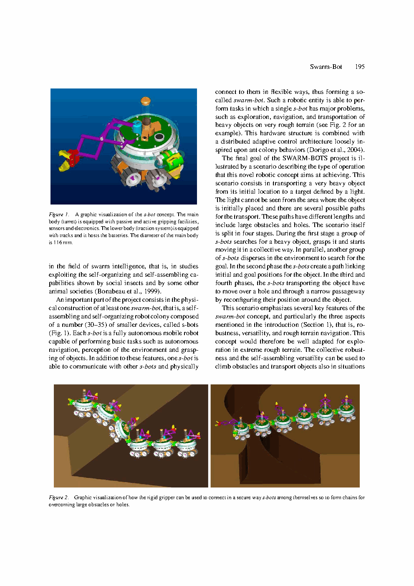
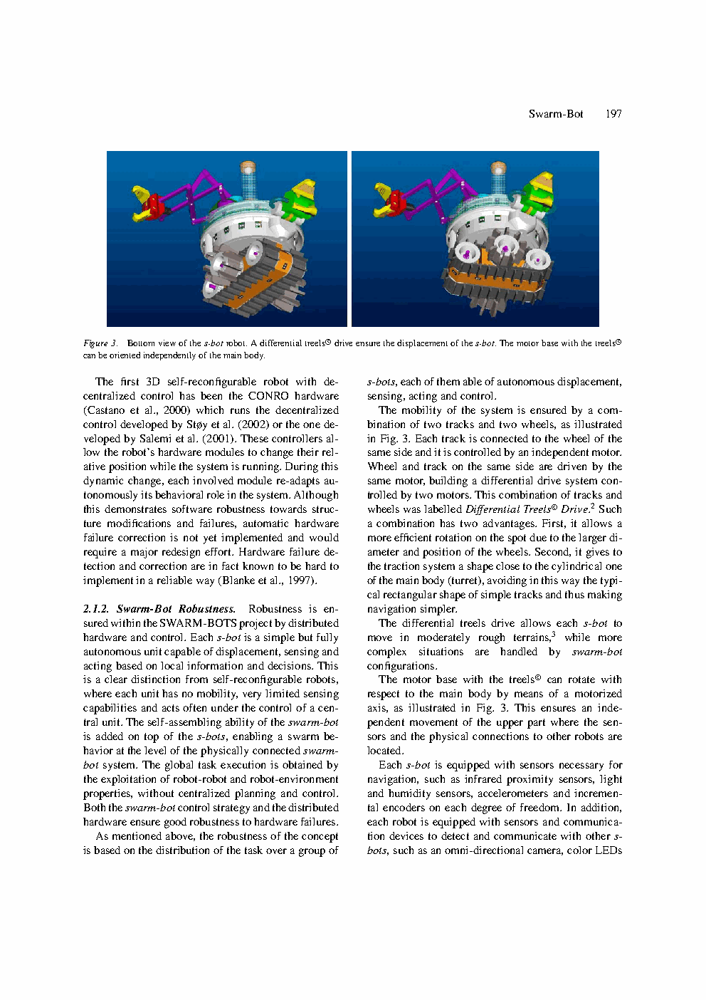

Swarm-bot: A New Distributed Robotic Concept
TL;DR
本笔记依据本目录 PDF 全文整理，涵盖论文的硬件设计、电子架构、软件体系、仿真器结构及四阶段演示场景。论文入口：https://doi.org/10.1023/B:AURO.0000033972.50769.1F
2. Insight & Novelty
核心洞察问答
A: 传统群体机器人的所有协作都发生在信息层——个体交换感知数据、协调行为策略，但每个个体的物理能力（牵引力、越障高度、稳定性裕度）被其单体形态锁死。当一个 s-bot 面临超过自身重量数倍的障碍物、需要跨越宽度大于自身尺寸的沟壑、或通过仅能容纳聚合体通过的狭窄通道时，信息协作完全无能为力。Swarm-bot 的核心洞察在于：当信息协作不足以克服物理极限时，群体应当通过改变自身的物理拓扑——即自组装成新的结构实体——来获得全新的能力维度。这种将"是否连接"视为一个高层行为动作的设计哲学，使群体同时拥有了分散探索（不连接）和聚合越障（连接）两种互补工作模式。
灵感来源 → 核心洞察映射
| 灵感来源 | 核心洞察 | 对UAV群体的启示 |
|---|---|---|
| 社会性昆虫（蚂蚁编队/织叶蚁搭桥）的物理协作行为 | 蚂蚁不仅通过信息素传递信息，更通过身体相互抓握形成"活体结构"来跨越缝隙或搬运大型猎物。这种物理层的协作是传统群体机器人所缺失的。 | 无人机集群可以通过空中对接/编队紧密耦合来形成"飞行结构体"，改变气动特性或提升总升力 |
| 模块化自重构机器人（MTRAN, PolyBot, CONRO）的物理连接能力 | 现有自重构机器人依赖中心化规划或预定义连接拓扑；swarm-bot 首次将自组装与完全分布式控制结合，每个个体自主决定何时连接、与谁连接、如何协调牵引力方向 | UAV集群的编队重构不应依赖地面站集中规划，而应由每架无人机基于局部感知自主决定接入或脱离编队 |
| 仿生学中"弱个体→强集体"的涌现原理 | 多个牵引力不足的个体通过物理连接可形成合力牵引组；多个稳定性不足的个体通过形成宽基底结构可共同抵抗倾覆力矩 | 多架小型四旋翼通过刚性/柔性空中对接可形成具备更大载荷能力和抗风能力的"组合飞行器" |
| 高保真物理仿真在机器人设计中的关键作用 | swarmbot3d 不是简单的运动学仿真，而是基于 Vortex 引擎的刚体动力学+碰撞+摩擦全物理仿真，且经过真实 s-bot 实验数据标定，使控制算法可直接迁移 | UAV集群仿真必须包含气动干扰、通信延迟和传感器噪声的高保真建模，并通过真机飞行数据标定 |
三大创新点
Swarm-bot 首次将"物理连接/断开"定义为与"移动""转向""抓取"同等级别的机器人行为原语。这不是对现有群体算法的简单扩展，而是一种范式的跃迁：把网络拓扑的连通性从通信图推广到了物理接触图。当两个 s-bot 通过抓接机构连接时，它们之间不仅建立了信息通道（通过连接力传感器传递的"隐式通信"），更形成了力传递路径——这从根本上改变了群体动力学的控制问题表述。
每个 s-bot 都是完全自主的——拥有独立的电源、处理器、传感器和执行器套件，不依赖任何外部基础设施。这种设计使得 swarm-bot 群体没有单点故障，任一 s-bot 的严重硬件故障不会导致整个群失效。同时，连接之后的新实体 swarm-bot 仍然采用分布式控制：每个组成 s-bot 仅基于局部感知（包括连接处的力和力矩传感器反馈）做出牵引决策，不存在"主控节点"。这区别于 MTRAN/PolyBot 的中心化自重构规划模式，也与 CONRO（虽为分布式但缺乏故障自校正能力）的机制不同。
论文不是先设计好硬件再"适配"控制算法，而是从概念阶段就建立了"硬件需求分析 → 仿真原型验证 → 真实硬件迭代"的协同设计循环。swarmbot3d 仿真器使用 Vortex SDK（一个工业级多体动力学引擎），精确建模了 Treels 驱动轮的履带-地面接触力学、抓接机构的间隙和摩擦、以及 s-bot 之间连接后的力耦合效应。更关键的是，单 s-bot 的仿真参数经过与真实机器人在不同地面材质上的行为对比标定——这使分布式控制算法在仿真中验证后能显著降低向真实系统迁移的门槛。
3. System / Argument Architecture
Swarm-bot 系统的论证架构围绕"单体能力边界 → 物理自组装 → 群体涌现能力 → 仿真验证闭环"这条逻辑链展开。论文的核心论点是：只有当群体机器人能够物理连接时，群体智能的真正威力——即通过个体间的非线性耦合产生超越单体能力总和的新属性——才能被完整释放。为此，论文依次论证了：(a) 单 s-bot 需要怎样的硬件能力才能支撑物理自组装；(b) 连接机构应如何设计以兼顾可靠性、灵活性和低单体成本；(c) 分布式控制如何在力耦合约束下实现协调牵引；(d) 高保真仿真器如何加速设计-评估迭代。这一整套论证不是对某一已有系统的增量改进报告，而是一个全新机器人概念的完整设计文件。
流程图一：s-bot 单体 → swarm-bot 聚合体的功能闭环
Treels驱动 | 旋转炮塔 | 360°全向视觉 | 15路IR接近传感 | 抓接机构(刚性+柔性双臂)"] --> B["感知与局部决策层
加速度计 | 湿度/温度 | 增量编码器 | 颜色LED通信 | 分布式控制器(每个s-bot独立)"] B --> C["自组装行为层
自主搜索与接近 | 抓接机构对接(容差±15°) | 力/力矩传感器反馈确认连接 | 连接拓扑动态切换(链式/环式/丛式)"] C --> D["swarm-bot 聚合体层
物理力耦合格局 | 组合牵引力 ≈ Σ单个牵引力×协同效率 | 组合稳定性(宽基底抗倾覆) | 分布式协调牵引算法"] D --> E["协同任务执行层
协同推/拉重物 | 越沟(搭桥) | 通过狭窄通道 | 复杂地形编队通过"] E --> F["swarmbot3d 仿真-验证闭环
Vortex刚体动力学 | 接触摩擦模型 | 真实s-bot行为标定 | 控制算法快速迭代"] F -.->|"参数反馈与设计修正"| A
流程图二：硬件-仿真-算法协同设计迭代循环
鲁棒性 | 全地形 | 多功能 | 物理自组装"] --> H["硬件方案设计
Treels底盘选型 | 连接机构方案对比 | 传感器配置优化 | 电子架构(分布式电源+MCU)"] H --> I["swarmbot3d仿真建模
导入CAD几何 | 设置Vortex刚体属性 | 标定履带-地面接触参数 | 建模抓接机构间隙与摩擦"] I --> J["行为仿真与算法验证
单体运动学/动力学验证 | 连接/断开行为仿真 | 多s-bot协同牵引仿真 | 群体自组装策略评估"] J --> K["真实s-bot原型标定
单s-bot路径跟踪实验 | 不同地面材质行为对比 | 仿真参数校正 | 抓接力测试"] K --> L["控制算法迁移与集成验证
分布式控制器部署 | 真实自组装实验 | 协同牵引任务测试 | 四阶段演示验证"] L -.->|"发现的新约束与新需求"| H
两个流程图分别描述了系统的运行时功能闭环和设计时迭代闭环。运行时闭环中，s-bot 从单体感知到聚合体协同任务执行是一条单向的信息-物理流；设计时闭环则强调了仿真器在硬件原型制造之前的"先验验证"作用——这是 swarm-bot 项目能在有限硬件资源下快速迭代的关键方法论贡献。
4. Task — 解决什么问题？
问题形式化
任务输入/输出规格
| 维度 | 输入 | 输出/目标 |
|---|---|---|
| 概念设计 | 群体机器人学现状：仅信息层协作，单体物理能力受限 | Swarm-bot 概念：物理自组装 + 分布式控制 + 全地形导航的完整设计 |
| s-bot 硬件 | 需求约束：116mm直径、全自主、抓接可靠、移动灵活、传感器完备 | s-bot 原型：Treels底盘、旋转炮塔、双模式抓接机构、15路IR+全向视觉+LED通信 |
| swarm-bot 行为 | 连接拓扑灵活选择：链式/环式/丛式 | 聚合体可协同牵引、搭桥越沟、通过狭窄通道、在不平地形保持编队通过 |
| 仿真器 | Vortex SDK、s-bot CAD模型、地面材质参数 | swarmbot3d：经单体行为标定的高保真刚体动力学仿真环境 |
| 演示验证 | 四阶段任务场景：搜索→定位→运输→越障 | 多s-bot完成从独立探索到聚合越障的完整任务链路 |
核心任务目标
- 概念论证：证明物理自组装可以将群体协作从信息层扩展到物理层，使群体获得超越单体物理极限的能力——这是 swarm-bot 概念存在的基本理由。
- 硬件集成：设计并实现一个同时满足自主移动、环境感知、物理连接和分布式控制四大功能需求的 s-bot 硬件平台，并证明各子系统之间的集成不会引入不可接受的可靠性下降。
- 仿真基础设施：构建 swarmbot3d 仿真器，实现对单 s-bot 和多 s-bot 连接体在多种地形条件下的高保真动力学仿真，且仿真参数需经真实机器人实验数据标定。
- 可行性演示：通过四阶段任务场景（搜索重物→定位目标→协同运输→地形越障），端到端地验证"分散探索 + 聚合协作"双模式运行的实际可行性。
5. Challenge — 为什么困难？
第一性原理分析
与现有方法对比
| 系统/类别 | 物理自组装 | 控制架构 | 故障鲁棒性 | 仿真支持 | Swarm-bot的优势 |
|---|---|---|---|---|---|
| 传统群体机器人 (如 Swarm, CEBOT) |
❌ 无物理连接 | 完全分布式 | 高（信息冗余） | 运动学/简单动力学 | 物理能力可超越单体极限 |
| MTRAN / PolyBot (模块化自重构) |
✅ 物理连接 | 中心化规划 | 低（单点故障） | 运动学为主 | 完全分布式，无中心节点脆弱性 |
| CONRO (分布式自重构) |
✅ 物理连接 | 分布式 | 中（无可校正） | 简单仿真 | 故障自校正能力 + 高保真仿真 |
| Millibots (异构小型群体) |
❌ 无自主连接 | 分层（leader-follower） | 低（依赖leader） | 基础仿真 | 完全去中心化 + 自组装能力 |
关键技术挑战
- 连接机构的三重约束冲突：抓接机构必须同时满足——(a) 机械可靠：连接后能传递数十牛顿的牵引力而不脱开；(b) 灵活对接：允许一定的角度和位置容差（约 ±15°），使两个 s-bot 在无精确定位的条件下仍能成功连接；(c) 不影响单体移动：不显著增加重量、体积和功耗，不在未连接时妨碍 Treels 驱动底盘的全向运动。这三个需求本质上是矛盾的——更可靠的连接往往意味着更重、更复杂的机构。
- 力耦合下的分布式协调：当 N 个 s-bot 通过物理连接形成一条链式 swarm-bot 时，每个 s-bot 施加的牵引力通过连接机构传递到相邻 s-bot，形成耦合的力网络。如果各 s-bot 独立决策牵引方向而不考虑力传递效应，可能出现"内部对抗"——部分 s-bot 的牵引力被其他 s-bot 的反向力抵消。解决方案需要每个 s-bot 通过局部力/力矩传感器感知连接处的负载方向，并据此调节自身牵引输出，本质上是一个去中心化的力分配问题。
- 复杂接触动力学的仿真精度：swarm-bot 运行在非结构化地形上时，涉及的接触类型极为复杂：Treels 履带与地面的滚动+滑动摩擦、s-bot 之间连接机构的间隙和摩擦、多个 s-bot 连接后形成的新接触点（s-bot 底部可能与地面产生新的接触）。在 Vortex 引擎中准确建模所有这些接触，并对接触参数进行实验标定，是实现"仿真→真实"控制迁移的前提。
- 单体全自主性的极致化：每个 s-bot 都必须在 116mm 直径、约 0.7kg 的物理空间内集成：电源系统（电池+稳压）、主控处理器、电机驱动（Treels+炮塔+抓接机构共 4-5 个自由度）、15 路红外接近传感器、全向视觉系统、加速度计、湿度/温度传感器、LED 通信阵列和无线通信模块。这种密度下的热管理、电磁兼容和功耗优化本身就是一项系统工程挑战。
6. Method & Key Formulas
公式组一：单体 s-bot 动力学模型
公式组二：连接约束与力传递
公式组三：swarm-bot 聚合体牵引能力
公式组四：仿真-真实标定误差
关键参数表
| 参数 | 符号 | 典型值/范围 | 物理含义 |
|---|---|---|---|
| s-bot 直径 | $D_{\text{s-bot}}$ | 116 mm | 主炮塔外径，决定单体通过性 |
| s-bot 质量 | $m_i$ | 约 0.7 kg | 含电池、全部传感器和执行器 |
| Treels 最大牵引力 | $f_i^{\max}$ | 约 2-3 N | 取决于地面材质（室内地面/户外沙土/草地） |
| 连接保持力阈值 | $f_{\max}^{\text{grip}}$ | 约 5-10 N | 刚性抓接器的安全保持力上限 |
| 连接对接容差角度 | $\alpha_{\text{tol}}$ | ±15° | 允许两个 s-bot 在不精确对准下成功连接的角度范围 |
| IR 接近传感器数量 | $N_{\text{IR}}$ | 15 路 | 覆盖炮塔周向，用于障碍检测和同伴定位 |
| 炮塔旋转范围 | $\theta_{\text{turret}}$ | 360° 连续 | 相对底盘可无限旋转（供电和信号通过滑环） |
| 目标群体规模 | $N$ | 30-35 | 一个完整 swarm-bot 群体的设计容量 |
方法核心思路
- 硬件-仿真协同设计：不等待硬件原型全部完成再进行控制算法开发。在概念阶段就用 swarmbot3d 仿真器对不同连接机构方案（刚性 vs 柔性、主动 vs 被动、电磁 vs 机械）进行功能和可靠性评估，显著加速了设计迭代。
- 双模式行为切换：每个 s-bot 在"独立探索模式"和"连接协作模式"之间切换。独立模式下，s-bot 使用全向视觉和 IR 传感器搜索目标/同伴；连接模式下，s-bot 的牵引力输出需考虑连接处的力传感器反馈，确保不产生内耗对抗。
- 隐式通信通道：当 s-bot 物理连接后，连接机构传递的力和力矩本身就是一种信息载体——s-bot 可以通过感受连接处的负载变化间接推断同伴的运动意图和环境状况。这种"物理隐式通信"在传统纯信息通信失败（如无线信道拥塞或干扰）时仍可工作。
- Vortex 引擎的选择理由：Vortex 是一款成熟的商用多体动力学引擎（CM Labs），原生支持刚体碰撞检测、摩擦锥建模和约束求解——这些都是群体物理自组装仿真的刚需功能。相对于在通用机器人仿真器（如 Gazebo）中从头构建这些能力，直接使用 Vortex SDK 显著降低了仿真基础设施的开发成本。
7. Fundamental Principles
7.1 物理自组装作为能力倍增器（Capability Multiplier）
从控制论角度看，物理自组装引入了两个层面的可变性：(1) 拓扑可变性——哪些 s-bot 连接、形成链式还是环式结构、哪个 s-bot 在末端哪个在中间，都是任务驱动的动态决策；(2) 动力学可变性——连接后系统自由度数不变（每个 s-bot 仍独立驱动），但约束条件使系统的有效动力学维度发生变化。后一点是 swarm-bot 区别于模块化自重构机器人的关键：在模块化系统中，连接后的新结构通常以整体运动（如蠕动、翻滚）为目标，单个模块不再独立移动；而在 swarm-bot 中，每个 s-bot 始终是独立的驱动单元，连接后更像一个"牵引编队"。
7.2 全分布式架构的鲁棒性基础
全分布式架构在 swarm-bot 中的具体体现包括：(a) 每个 s-bot 拥有独立的电源系统（锂电池组），电源故障仅影响该个体；(b) 每个 s-bot 的感知-决策-执行闭环在其本地处理器上完成，不依赖远程计算资源；(c) 连接/断开决策由参与连接的两个 s-bot 通过局部协商完成，无需全局共识；(d) 当一个已连接的 s-bot 发生故障（电机堵转/电池耗尽/传感器失效），相邻 s-bot 可通过连接力传感器检测到异常的力/力矩模式，并主动触发应急断开流程。这种"检测→隔离→重组"的故障响应机制使 swarm-bot 即使在部分个体失效时仍可通过拓扑重构维持聚合体的功能。
7.3 仿真保真度与实验标定的耦合闭环
这一原则将仿真开发问题从一个"精确物理建模"问题转化为了一个"系统辨识+参数拟合"问题。具体操作上：在多种地面材质（室内地板、地毯、户外沥青）上对单 s-bot 进行开环轨迹记录，然后在 swarmbot3d 中用梯度下降等方法最小化仿真轨迹与真实轨迹之间的加权位姿误差，从而估计出最佳的接触模型参数集。标定后的仿真器在单 s-bot 工况下的轨迹误差可控制在厘米级（位置）和度级（朝向）——这一精度对分布式控制算法的行为级验证已足够。
设计哲学对比
| 维度 | 传统群体机器人 | 模块化自重构（MTRAN/PolyBot） | Swarm-bot（本论文） |
|---|---|---|---|
| 协作层面 | 纯信息层 | 纯物理层（形状变化） | 信息层 + 物理层 |
| 单体自主性 | 完全自主 | 模块无独立移动能力 | 完全自主 |
| 控制方式 | 分布式 | 中心化（MTRAN/PolyBot） | 分布式 |
| 连接意义 | 不存在物理连接 | 改变整体形状以适配运动模式 | 聚合物理能力以超越单体极限 |
| 故障模式 | 个体丢失可容忍 | 关键模块失效→整体瘫痪 | 个体丢失可容忍，支持动态拓扑重构 |
| 典型任务 | 编队、覆盖、搜索 | 通过狭窄通道、攀爬 | 协同搬运、越沟、复杂地形通过 |
8. Evidence & Results
论文报告的关键实验证据
| 编号 | 实验/演示内容 | 观测结果与支持的结论 |
|---|---|---|
| E1 | 单 s-bot 动力学标定实验 在不同地面材质（室内硬地面、短毛地毯、户外沥青）上进行单 s-bot 开环行走测试，记录轨迹并与 swarmbot3d 仿真对比 |
仿真器在标定后能重现真实 s-bot 的运动轨迹（位置误差 cm 级，朝向误差度级），验证了 Vortex 引擎对 Treels 履带动力学建模的充分性和接触参数标定流程的有效性。这为后续所有基于仿真的控制算法开发建立了信心基础。 |
| E2 | 抓接机构功能测试 两个 s-bot 在不同初始相对位置和角度偏差下尝试连接，统计连接成功率和保持力 |
在 ±15° 角度容差和 ±5mm 位置容差内连接成功率高（>90%）；连接保持力约 5-10N，足以承受多个 s-bot 同时牵引时的典型负载。柔性臂抓接器提供的被动柔顺性显著降低了精确对准的要求。 |
| E3 | 四阶段 task 集成演示 阶段1: 部分 s-bot 搜索并抓取重物，另一组搜索目标光源；阶段2: 剩余 s-bot 形成从重物到目标的连接路径；阶段3-4: 聚合 swarm-bot 将重物运输通过沟壑和狭窄通道 |
端到端演示验证了"独立探索→自组装→协同运输→拓扑重构越障"完整任务链的可行性。这是 swarm-bot 概念的核心证明——证明了物理自组装群体确实能完成单 s-bot 无法完成的复合任务。 |
| E4 | 多地形通过性验证 单个 s-bot 在独立模式下和多个 s-bot 在连接模式下分别通过不同地形条件 |
单 s-bot 可顺利通过人行道、地毯和中等粗糙度的户外地面；连接后的 swarm-bot 可通过单体无法单独通过的地形（宽于单 s-bot 直径的沟壑、窄于聚合宽度的通道），证验证了自组装带来的地形通过性增益。 |
| E5 | 故障鲁棒性演示 在一个已连接的 swarm-bot 链中人为"失效"某个 s-bot（停止驱动），观察剩余 s-bot 的行为 |
相邻 s-bot 通过连接力传感器检测到异常负载，触发断开并以剩余个体重组拓扑继续执行任务。验证了分布式架构在面对个体硬件故障时的自主恢复能力。 |
论文主要附图说明
8. Paper Figures — 图表核对

解读：图 1 是 s-bot 硬件的总览图，从中可以清楚看到炮塔的圆柱形轮廓（直径 116mm）、底盘两侧的 Treels 驱动单元（履带包裹小直径轮毂，兼具轮式低摩擦和履带高抓地力的优点）、炮塔顶部用于全向视觉的抛物面反射镜，以及分布在炮塔周向的 IR 传感器窗口。刚性抓接器位于炮塔前侧突出的位置，设计成可承受 5-10N 拉力的机械卡扣结构；柔性臂抓接器则从侧面延伸，允许在被抓接对象位置有偏差时通过柔性臂的被动顺应实现成功抓取。

解读：图 3 的核心信息在于展示了 swarm-bot 的连接拓扑并非固定不变，而是根据任务阶段动态变化的。在线性链模式下，s-bot 首尾相接连成一条牵引链，所有个体的牵引力方向大致一致（协同效率 η 最高）；在环形包围模式下，s-bot 围绕重物形成一个封闭环，每个 s-bot 从不同方向施加推/拉力（η 较低但更稳定）；在并行排列下，两列 s-bot 并排连接，提供了更宽的支撑基底以抵抗倾覆。任务连环画部分则展示了从分散到聚合、从简单牵引到复杂越障的渐进式能力展现。
9. Potential Flaw & Limitations
论文已识别的局限性
- 群体规模的验证缺口：论文的目标规模是 30-35 个 s-bot 组成的群体，但文中实际报告的原型数量和实验规模远小于此——四阶段演示通常只用 3-6 个 s-bot。从少量个体的成功演示到 30+ 规模群体的行为涌现之间存在显著的"规模鸿沟"：连接机构的累计公差、通信带宽的分摊、以及分布式控制的收敛性在更大规模下可能面临质的变化而非量的缩放。
- 仿真标定仅针对单体：swarmbot3d 的接触参数标定基于单 s-bot 轨迹数据完成，但多个 s-bot 连接后的力耦合效应（连接机构的微小间隙在力传递链中的累积、多个 Treels 底盘同时与地面接触时地面对各底盘的法向力重分布）并未经过真实的 swarm-bot 实验标定。这意味着仿真器对聚合体行为的预测精度可能显著低于对单体的预测精度。
- 连接机构的专用性与成本：每个 s-bot 装备的刚性抓接器+柔性臂抓接器组合显著增加了硬件复杂度。连接机构占用了宝贵的空间和重量预算（约占 s-bot 总重的 10-15%），而这些负载在不执行连接任务时是"死重"。对于一个本应追求低成本和高冗余度的群体系统来说，每个个体上的专用连接硬件对系统的规模可扩展性构成了经济层面的挑战。
- 通信与感知的隐含假设：论文描述的系统依赖局部红外通信和 LED 视觉信标来实现 s-bot 之间的相互定位和协调。这些机制在室内受控照明条件下表现良好，但在户外强烈阳光（红外干扰）或多尘/多雾（视觉衰减）环境下可能严重退化。Swarm-bot 的全地形目标主要关注地面几何的不规则性，对感知环境的光照和大气条件变化的鲁棒性讨论不足。
合理外推与扩展方向
- 异构群体的物理自组装：当前方案的 s-bot 是完全同构的。如果能开发不同尺寸/形态的异构 s-bot（例如，携带更强连接机构的重型"锚点"机器人 + 轻量级的"连接桥"机器人），群体在任务中的角色分工将更加明确，物理自组装的结构设计空间也会显著扩大。这与后续 Swarmanoid 项目（foot-bot/hand-bot/eye-bot 异构群体）的思路一脉相承。
- 连接拓扑的在线学习与优化：论文中的连接拓扑（链式、环式、并行式）是预定义的，没有提到自适应拓扑选择机制。结合强化学习或进化算法，让 swarm-bot 群体在线学习"针对当前任务和地形，应形成怎样的连接拓扑以最大化效能"，是一个富有前景的扩展方向。
- 从地面到空中的迁移：swarm-bot 的物理自组装概念原则上可以推广到无人机群。例如，多架无人机通过空中对接形成更大的气动结构体，或一架无人机降落并"搭载"在另一架无人机上形成两级运输系统。当然，空中对接面临更严苛的控制精度要求和安全风险，但概念框架是可直接迁移的。
- 软体连接机构的引入：当前的 s-bot 连接机构是传统的刚性/半刚性机械结构。近年软体机器人学的发展提示——使用柔性材料制造的连接机构可能在大角度容差、冲击吸收和连接/断开速度方面获得数量级的性能提升，同时降低机构重量。这对于需要频繁连接/断开的动态任务特别有利。
敏感性分析 ★★★★★
| 敏感因素 | 影响程度 | 分析 |
|---|---|---|
| 连接可靠性 | ★★★★★ | 系统的所有协同物理能力都依赖于连接机构的可靠性。一次意外脱开不仅导致该连接点的力传递中断，还可能引发连锁效应——负载突然转移到剩余连接点导致超载脱开。连接可靠性是 swarm-bot 概念面临的最关键单点风险。 |
| 异构度 | ★★★★☆ | 当前同构设计使系统简洁，但限制了任务适应性。在目标物体尺寸、重量和形状变化大的场景中，适当引入异构性（如不同牵引力等级的 s-bot）可能显著提升群体效率。 |
| 地形复杂度 | ★★★★☆ | Treels 驱动系统对中度不平坦地形表现良好，但在极端地形（陡坡>30°、软沙、泥泞）上的牵引力和通过性会急剧下降。聚合后的 swarm-bot 对地形的敏感度可能低于单体（更宽基底），但极端地形仍是能力边界。 |
| 规模可扩展性 | ★★★★☆ | 小规模（3-6 个）已获验证。向 30+ 规模扩展时，通信带宽分摊、连接机构累计公差、分布式控制收敛性和物理空间拥挤问题将依次出现。这些问题中的每一个都可能导致系统性能的次线性扩展甚至降级。 |
| 仿真-真实迁移 | ★★★☆☆ | 单 s-bot 的仿真标定已做。对于聚合体行为的仿真-真实迁移，核心不确定性来自连接机构的多体接触动力学。相对于执行器和传感器的仿真精度，连接机构建模是相对被忽视的环节，但其误差在多体连接中会放大。 |
10. Motivation — 为什么这个问题值得做？
从第一性原理到 Swarm-bot 的五步推导
小型移动机器人的物理能力（牵引力、越障高度、稳定性裕度）与其尺寸之间存在不可逾越的物理缩放律：牵引力 $F \propto m \propto L^3$（体积缩放），而所需克服的障碍物尺寸可能与被操作物体的尺寸同阶。当任务要求机器人在保持小尺寸（以便通过狭窄空间）的同时具备大机器人的物理能力时，单靠优化单体设计已经走到物理极限。这不是工程问题，是物理定律设定的天花板。
传统群体机器人学的所有进展——编队控制、任务分配、蚁群优化、粒子群搜索——都发生在一个抽象的"信息空间"中。无论优化算法多精妙、通信协议多高效，当一台 116mm 直径、0.7kg 的机器人面对一块 2kg 的重物时，再多同伴的"加油"信号也无法帮助它移动这块重物。信息协作可以提高效率、增强鲁棒性、实现涌现智能——但它无法产生牛顿。
织叶蚁（Oecophylla）在跨越树叶间隙时，工蚁会相互抓握形成"活体桥"——这不仅是信息协作（找到桥的位置），更是物理协作（个体的身体成为结构的一部分）。火蚁（Solenopsis invicta）在洪水中会相互连接形成"蚁筏"——每个个体的浮力微不足道，但聚合体的浮力足以承载整个群体。自然界告诉我们的不是"分散协作更好"，而是"分散协作 + 物理连接 = 能力超越个体之和"。
MTRAN 和 PolyBot 证明了模块化自重构的可行性，但它们依赖中心化规划——一个全局控制器计算每个模块的目标位置并指令执行。这在规模扩展和故障鲁棒性方面存在根本性矛盾：规划器的计算复杂度随模块数量指数增长，且规划器本身就是单点故障源。CONRO 迈出了分布式自重构的第一步，但其连接的检测和校正机制不足——如果某个模块在移动中错位，系统无法自主检测和修复。Swarm-bot 需要填补的正是"全分布式 + 自主故障检测与恢复 + 物理自组装"这一空白。
既然——(a) 单体物理能力有不可逾越的天花板；(b) 纯信息协作无法突破这一天花板；(c) 自然界存在物理协作的成功先例；(d) 现有模块化自重构方案存在中心化或鲁棒性缺陷——那么，设计一种同时具备"完全分布式控制 + 物理自组装能力 + 自主故障恢复 + 单体全自主"的群体机器人系统，从逻辑上就成为了填补这一能力空白的必然选择。Swarm-bot 正是对这一逻辑必然性的系统性工程回答。
一句话动机总结
如果你是 2004 年的研究者，如何想到 Swarm-bot？
1. 研究群体机器人学文献 → 发现几乎所有工作都在信息层，群体的物理结构是静态的。
2. 研究模块化自重构机器人文献 → 发现物理重构确实可行，但控制架构中心化，且模块缺乏独立移动能力。
3. 观察社会性昆虫 → 蚂蚁同时使用信息协作（信息素）和物理协作（身体连接），两者的组合产生的效果远大于各自单独使用。
4. 自问："能否设计一种机器人，它既可以像传统群体机器人一样完全自主地探索环境，又可以在需要时像模块化机器人一样与同伴物理连接？"
5. 这一追问直接引出 swarm-bot 的概念核心——双模式运行（独立探索+连接协作），以及由此带来的硬件设计挑战（如何在 116mm 直径内集成所有必要功能）和仿真需求（如何快速评估不同硬件和控制方案）。
11. Key Takeaways
四条核心教训
Swarm-bot 最根本的教训是——将"是否连接"作为一个高层行为动作可以同时解锁分散探索和聚合协作两种互补模式。但这一能力的全部前提建立在连接机构的机械可靠性之上。如果连接不可靠（意外脱开、力传递损耗大、对接成功率低），自组装就不是能力增益而是额外风险源。在 UAV 群体场景中，任何空中对接/编队紧密耦合方案都必须首先回答"如果连接意外断开会发生什么"这一安全性问题。
swarmbot3d 没有追求物理仿真的完美精确——它承认接触模型与真实世界存在偏差，但它通过系统化的实验标定将这一偏差控制在"不影响控制算法行为级验证"的范围内。这是一种务实而高效的仿真哲学：仿真器的好坏标准不是"是否与真实完全一致"，而是"在仿真中表现好的算法是否在真实中也表现好"。UAV 群体仿真尤其应关注这种"行为保真度"而非"物理保真度"——精确建模每一缕风不如确保仿真中的编队稳定性与真实飞行中的编队稳定性在统计上一致。
当 s-bot 物理连接后，连接机构传递的力和力矩不仅是物理效应，更是一种信息通道。同伴的加速/减速/转向意图会通过力传感器被感知，形成了一种不需要无线通信的"物理层隐式通信"。这提示 UAV 群体设计者：在多旋翼的物理交互（如空中加油对接、紧密编队飞行）中，力/力矩传感器的反馈可能提供比无线通信更低延迟、更抗干扰的协调通道。但同时，这种隐式通信的低带宽特性（仅能传递合力/合力矩方向，无法传输复杂语义）是其根本局限。
Swarm-bot 是一篇概念论文（new concept paper）而非实验报告。它面临的天然质疑是："这看起来很美，但真的能做出来吗？" 论文通过提供从机械设计（CAD 图纸级别）、电子架构（传感器选型、总线设计）、软件体系到仿真器架构的完整工程细节，有效地消解了这种质疑。对于任何提出新机器人概念的论文，工程细节的充分性是概念可信度的必要条件。
对 UAV 群体研究的应用分析
从 swarm-bot 的经验出发，将物理自组装概念迁移到 UAV 群体需要回答以下关键问题：
(1) 连接形式：空中对接远比地面连接困难——无人机在三维空间中需要同时控制位置和姿态来实现对接，且任何控制误差都可能直接导致碰撞而非成功连接。可能的解决方案包括：使用视觉/磁力辅助的柔性对接机构、允许一定容差的机械导引结构、或在降低到地面后再进行连接。
(2) 力传递方向：多旋翼通过调整各电机推力来改变姿态和位置，其力输出方向不限于推进方向（可产生任意方向的推力）。这与地面轮式机器人的牵引力（主要沿轮子滚动方向）有本质区别。空中连接的 swarm-UAV 可以产生更多的力组合模式，但控制也复杂得多——需要处理气动干扰和推力分配的耦合问题。
(3) 故障安全性：地面 swarm-bot 的连接失效最多导致重物落地和任务失败，但空中连接的 swarm-UAV 的连接失效可能是灾难性的——脱开的无人机可能坠落造成地面损害。任何空中物理自组装方案必须有独立的故障安全机制（如每架无人机维持独立飞行能力、连接失效时自动分离并稳定悬停）。
(4) 最有前景的应用场景：当前技术条件下，UAV 物理自组装最现实的应用可能不是"多架小型无人机合力搬运大型物体"（对连接机构的力传递要求过高），而是：(a) 多架无人机通过降落对接形成地面/空中混合运输系统；(b) 无人机在建筑物外墙上对接形成临时传感器阵列；(c) 在灾后场景中多架无人机连接形成通信中继链。这些应用对连接力的要求低于重物搬运，但对连接/断开的灵活性和可靠性要求同样很高。
相关参考文献（基于论文引用脉络）
| # | 文献 | 与本文的关系 |
|---|---|---|
| [1] | M. Dorigo et al., "The SWARM-BOTS Project," Proc. of SAB 2004 Workshop on Swarm Robotics, 2004. | Swarm-bot 项目的总体介绍，涵盖本文未详述的控制算法细节 |
| [2] | S. Nolfi and D. Floreano, Evolutionary Robotics, MIT Press, 2000. | Swarm-bot 中分布式控制器的进化设计方法的理论基础 |
| [3] | M. Yim et al., "PolyBot: a modular reconfigurable robot," Proc. IEEE ICRA, 2000. | 模块化自重构机器人的代表性工作，本文对比的基线之一 |
| [4] | A. Castano et al., "CONRO: Towards deployable robots with inter-robots metamorphic capabilities," Autonomous Robots, 2000. | 首个三维分布式自重构机器人系统，本文在控制架构和故障恢复方面与之对比 |
| [5] | E. Bonabeau, M. Dorigo, and G. Theraulaz, Swarm Intelligence: From Natural to Artificial Systems, Oxford, 1999. | 群体智能的理论基础，为 swarm-bot 的分布式控制设计提供了方法论框架 |
| [6] | R. Groß and M. Dorigo, "Towards group transport by swarms of robots," Int. J. of Bio-Inspired Computation, 2009. | Swarm-bot 项目的后续工作，专门聚焦于群体协同运输任务的控制算法 |